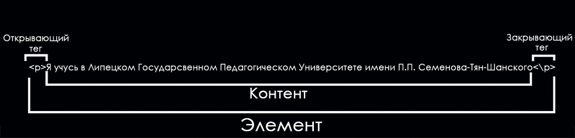
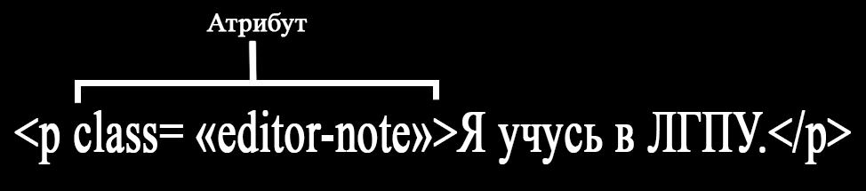

.png)


Начало работы с HTML
В этом разделе мы представим азы HTML необходимые новичкам или повторим их для тех, кто имеет начальный опыт. Мы также покажем, как устроены HTML-элементы, типичная HTML-страница и объясним другие важные аспекты языка.
Что такое HTML?
Я учусь в Липецком Государственном Педагогическом Университете имени П.П. Семенова-Тян-Шанского
Если мы хотим, чтобы строка отобразилась в таком же виде, мы можем определить её, как "абзац", заключив её в теги элемента "абзац" (
<p>Я учусь в Липецком Государственном Педагогическом Университете имени П.П. Семенова-Тян-Шанского</p>
Структура HTML элементов
Давайте рассмотрим элемент "абзац" чуть подробнее:
Основными частями элемента являются:
Открывающий тег : Он состоит из названия (обозначения) элемента (в нашем случае, p), помещённого внутри угловых скобок. Данный тег служит признаком начала элемента, с этого момента тег начинает влиять на следующее после него содержимое.Закрывающий тег : выглядит как и открывающий, но содержит слэш перед названием тега. Он служит признаком конца элемента. Пропуски закрывающих тегов — типичная ошибка новичков, которая может приводить к неопределённым результатам — в лучшем случае всё сработает правильно, в других страница может вовсе не прорисоваться или прорисоваться не как ожидалось.Содержимое : Как видно, в нашем случае содержимым является простой текст.Элемент : открывающий тег + закрывающий тег + содержимое = элемент.
Вложенные элементы
Вы также можете вкладывать элементы внутрь других элементов — это называется вложенностью. Если мы хотим подчеркнуть, что наш кот очень сердитый, мы можем заключить слово "очень" в элемент
<p>Я учусь в Липецком Государственном <strong> Педагогическом Университете </strong> имени П.П. Семенова-Тян-Шанского. </p>
Вы должны удостовериться, что элементы вложены должным образом: в следующем примере мы открываем
<p>Я учусь в Липецком Государственном <strong> Педагогическом Университете имени П.П. Семенова-Тян-Шанского.</p></strong>
Элементы должны открываться и закрываться правильно таким образом, чтобы явно находиться внутри или снаружи друг друга. Если они перекрываются так, как в примере выше, то ваш браузер попытается «додумать» за вас, что вы имели в виду, и вы получите непредсказуемый результат. Так что не делайте так!
Блочные и строчные элементы
Существует две важных категории элементов в HTML, которые вам стоит знать — элементы блочного уровня и строчные элементы.
- Элементы блочного уровня формируют видимый блок на странице — они окажутся на новой строке после любого контента, который шёл до них, и любой контент после них также окажется на новой строке. Чаще всего элементами блочного уровня бывают структурные элементы страницы, представляющие собой, например, параграфы (абзацы), списки, меню навигации, футеры, или подвалы, и т. п. Элементы блочного уровня не вкладываются в строчные элементы, но иногда могут вкладываться в другие элементы блочного уровня.
- Строчные элементы — это те, которые содержатся в элементах блочного уровня и окружают только малые части содержимого документа, не целые абзацы и группировки контента. Строчные элементы не приводят к появлению новой строки в документе: они обычно встречаются внутри абзаца текста, например, элемент
<a> (ссылка) или акцентирующие элементы вроде <em> или<strong> .
Посмотрите на следующий пример:
<em>Первый</em> <em>второй</em> <em>третий</em> <p>четвертый</p> <p>пятый</p> <p>шестой</p>
четвертый
пятый
шестой
Пустые элементы
Не все элементы соответствуют вышеупомянутому шаблону: открывающий тег, контент, закрывающий тег. Некоторые элементы состоят из одного тега и обычно используются для вставки чего-либо в то место документа, где размещены. Например, элемент
<img src="https://raw.githubusercontent.com /mdn/beginner-html-site/gh-pages/images/ firefox-icon.png">
Результат отображения браузером
Атрибуты
У элементов также могут быть атрибуты, которые выглядят так:
Булевы атрибуты
Иногда вы будете видеть атрибуты, написанные без значения — это совершенно допустимо. Такие атрибуты называются булевы, и они могут иметь только одно значение, которое в основном совпадает с его именем. В качестве примера возьмем атрибут
<input type="text" disabled="disabled">
Для краткости совершенно допустимо записывать их следующим образом (мы также для справки разместили не деактивированный элемент input, чтобы дать вам большее понимание происходящего):
<input type="text" disabled> <input type="text">
Результат отображения браузером
Структура HTML документа
Ниже дан пример оборачивания основных, самостоятельных HTML элементов, которые сами по себе не очень полезны. Давайте посмотрим, как самостоятельные элементы объединяются для формирования всей HTML страницы:
<!DOCTYPE html>
<html>
<head>
<meta charset="utf-8">
<title>Тестовая страница</title>
</head>
<body>
<p>Это — моя страница</p>
</body>
</html>
Результат отображения браузером
Вот что мы имеем:
<!DOCTYPE html> : Объявление типа документа. Очень давно, ещё когда HTML был молод (1991/2), типы документов использовались в качестве ссылок на набор правил, которым HTML-страница должна была следовать, чтобы она считалась хорошей, что может означать автоматическую проверку ошибок и другие полезные вещи. Однако в наши дни никто особо не думает о них, и типы документа стали историческим артефактом, которые должны быть включены везде, чтобы всё работало правильно.<!DOCTYPE html> — это самый короткий вид типа документа, который считается действующим. На самом деле это всё, что нужно вам знать о типах документов.-
<html></html> : Элемент<html> содержит в себе всё содержимое на всей странице, и иногда его называют "корневой элемент". -
<head></head> : Элемент<head> . Данный элемент выступает в качестве контейнера для всего содержимого, которое вы хотите включить в HTML документ, но не хотите показывать посетителям вашей страницы. Он включает такие вещи, как ключевые слова и описание страницы, которые вы хотели бы показывать в поисковых запросах, CSS для стилизирования вашего контента, объявление поддерживаемого набора символов и многое другое. Вы узнаете больше об этом из следующей статьи данного руководства. -
<meta charset="utf-8"> : Этот элемент устанавливает в качестве символьной кодировки для вашего документа utf-8 , который включает большинство символов из всех известных человечеству языков. По существу, теперь страница сможет отобразить любой текстовый контент, который вы сможете в неё вложить. Нет причин не устанавливать эту кодировку, это также позволит избежать некоторых проблем позднее. -
<title></title> : Элемент<title> . Этот элемент устанавливает заголовок вашей страницы, который появляется во вкладке браузера, загружающей эту страницу, также это заглавие используется при описании страницы, когда вы сохраняете её в закладках или избранном. -
<body></body> : Элемент<body> . Он содержит весь контент, который вы хотите показывать посетителям вашей страницы, — текст, изображения, видео, игры, проигрываемые аудио дорожки или что-то ещё.